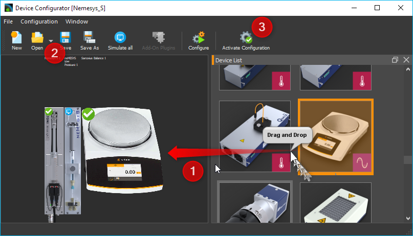
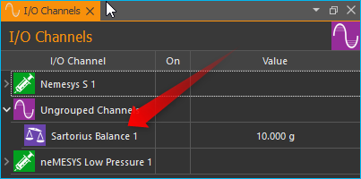
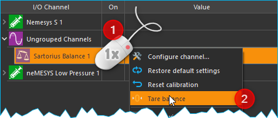

Waagen Plugin

Einführung
Dieses Plugin dient zur Einbindung von externen Waagen in die Software. Folgende Geräte werden im Moment unterstützt:
Hersteller |
Unterstützte Geräte |
|---|---|
Sartorius |
Entris, ED-, GK- and und GW-Waagen |
Konfiguration von Sartorius Waagen
Damit die Waage optimal mit der Software arbeitet, stellen Sie am Geräte bitte die folgenden Parameter ein:
Hinzufügen der Waage zu einer CETONI Elements Gerätekonfiguration
Fügen Sie im Gerätekonfigurator einfach eine Waage mittels Drag & Drop oder Doppelklick der aktuellen Gerätekonfiguration hinzu ❶. Speichern Sie dann die Gerätekonfiguration ❷ und aktivieren Sie diese durch anklicken der Schaltfläche Activate Configuration ❸.
Bedienung
Anzeige / Lesen der Werte
Für jede Waage, die der Gerätekonfiguration hinzugefügt wurde, wird in der Liste der I/O Kanäle ein analoger Eingangskanal angezeigt. Im Bild unten ist das der Kanal Sartorius Balance 1.
Dieser analoge Kanal zeigt in der Spalte Value den aktuellen Wert an, der von der Waage gemessen wird. Wie jeder andere analoge Kanal, kann auch dieser Kanal im grafischen Logger oder CSV Logger hinzugefügt werden oder im Script gelesen werden.
Waage tarieren
Um die Waage zu tarieren, klicken Sie mit der rechten Maustaste auf den Kanal ❶ und wählen dann im Kontextmenü den Punkt ❷.
Das Tarieren der Waage kann auch in einem Script ausgeführt werden.
Fügen Sie dafür die Scriptfunktion Device Functions –> Write Device Property ❶
dem Script hinzu. Konfigurieren Sie diese Funktion nun so,
dass der Wert 1 ❷ in das Property Tare ❸ des Waagenkanals
geschrieben wird (siehe Abbildung unten)